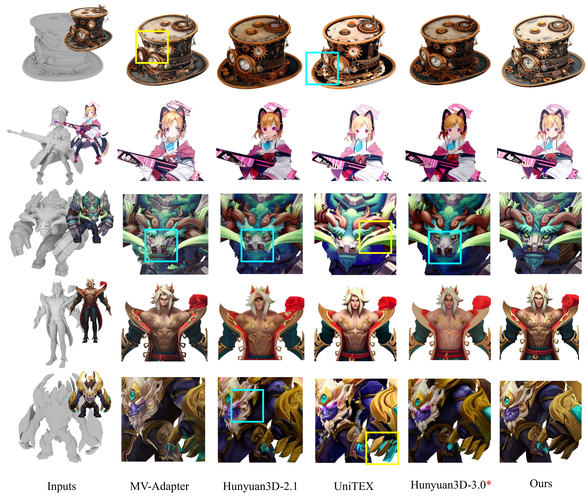
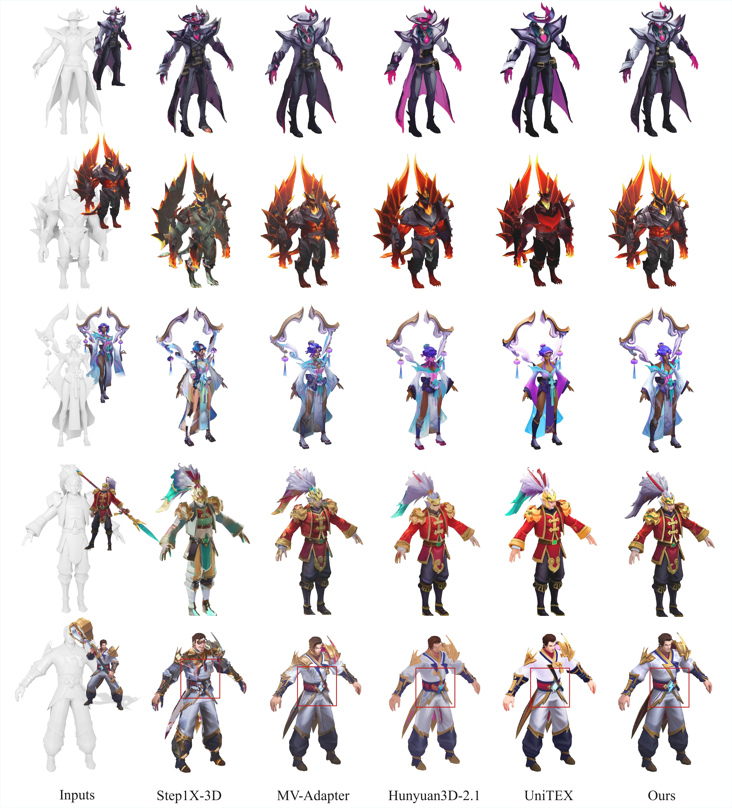

Despite major advances brought by diffusion-based models, current 3D texture generation systems remain hindered by cross-view inconsistency -- textures that appear convincing from one viewpoint often fail to align across others. We find that this issue arises from attention ambiguity, where unstructured full attention is applied indiscriminately across tokens and modalities, causing geometric confusion and unstable appearance-structure coupling. To address this, we introduce CaliTex, a framework of geometry-calibrated attention that explicitly aligns attention with 3D structure. It introduces two modules: Part-Aligned Attention that enforces spatial alignment across semantically matched parts, and Condition-Routed Attention which routes appearance information through geometry-conditioned pathways to maintain spatial fidelity. Coupled with a two-stage diffusion transformer, CaliTex makes geometric coherence an inherent behavior of the network rather than a byproduct of optimization. Empirically, CaliTex produces seamless and view-consistent textures and outperforms both open-source and commercial baselines.
Results
Textured 3D Models
(Gallery of textured meshes generated by CaliTex • ~20MB each)
Qualitative comparison with recent methods

More Visual Results

BibTeX
@misc{liu2025calitexgeometrycalibratedattentionviewcoherent,
title={CaliTex: Geometry-Calibrated Attention for View-Coherent 3D Texture Generation},
author={Chenyu Liu and Hongze Chen and Jingzhi Bao and Lingting Zhu and Runze Zhang and Weikai Chen and Zeyu Hu and Yingda Yin and Keyang Luo and Xin Wang},
year={2025},
eprint={2511.21309},
archivePrefix={arXiv},
primaryClass={cs.CV},
url={https://arxiv.org/abs/2511.21309},
}